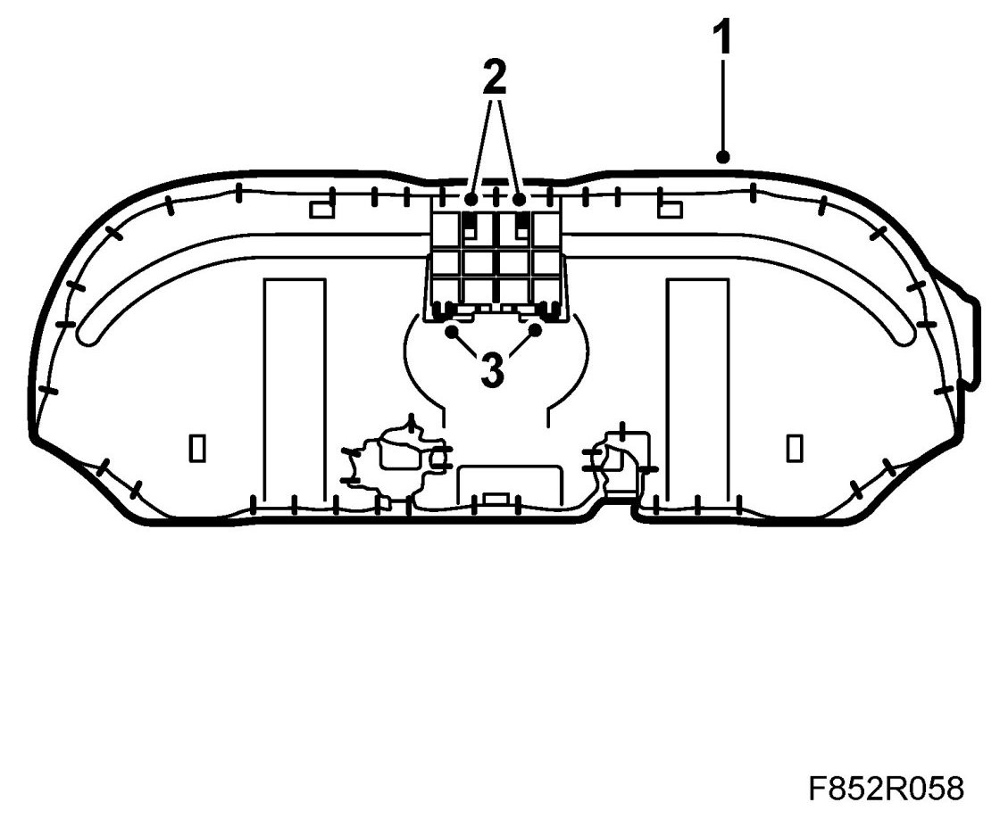
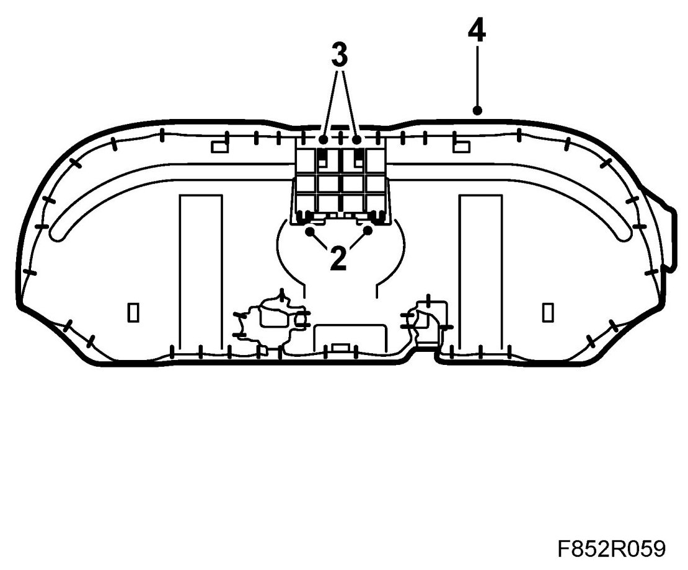

Cup Holder, Rear Seat
Cup Holder, Rear Seat
Removing
1. Remove the rear seat by grasping the front edge, above the mounting points, and pulling upward.

2. Press in the clips on the underside of the cup holder and pull out the cup holder unit.
3. Remove the cup holder insert from the rear seat by pressing in the clips on the rear edge of the insert to release it from the bar.
4. Carefully remove the insert through the hole in the front edge of the rear seat. Be careful not to damage the seat upholstery.
Fitting
1. Carefully insert the cup holder insert into the hole in the front edge of the rear seat. Be careful not to damage the seat upholstery.
2. Press in the insert so that the clips engage the bar.

3. Press the cup holder into position in the insert. Take care to ensure that the cup holder clip locks correctly.
4. Fit the rear seat by lowering the front edge and pressing the seat down above the mounting points. Check that the rear seat is properly fitted.